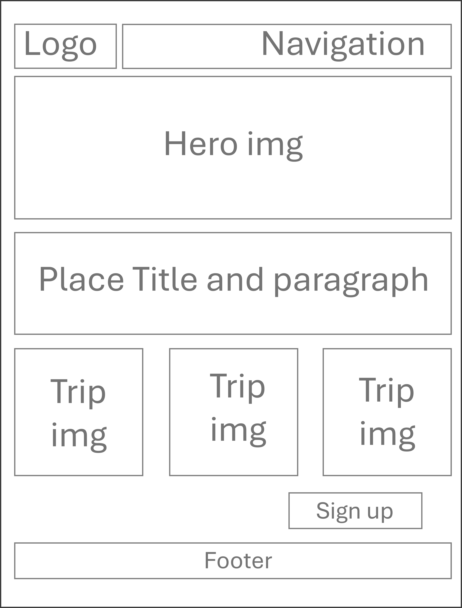
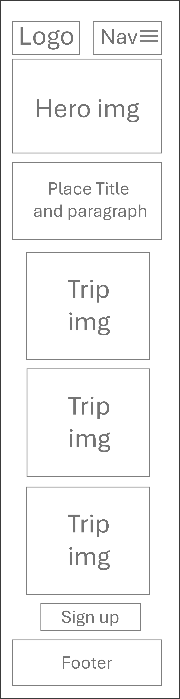

Colombia Uncovered Site Plan
Site Name:
Colombia Uncovered
I chose this title because I want to showcase some of Colombia's most beautiful places that are not widely known or commonly recognized by tourists. While I will also feature well-known destinations, my main focus will be on highlighting hidden gems and lesser-known locations that deserve more attention.
Purpose:
The purpose of this project is to inspire people to learn more about Colombia and consider it as an exciting travel destination. Through this website, visitors will discover a variety of places to explore, activities to enjoy, and cultural experiences that make Colombia unique. By presenting different regions, attractions, and travel styles, the site helps users identify what they enjoy most—whether it’s nature, history, food, beaches, or adventure—so they can choose the destinations that best match their interests and plan a trip that truly fits them.
Scenarios:
What are the safest and most beautiful places to visit in Colombia for first‑time travelers?
Which Colombian regions match my interests—beaches, mountains, culture, or adventure?
Color Scheme
(guava-pink: #a31838) Will be used for headers, buttons
(jungle-green: #2A8D6E) Will be used for titles such h2
(cloud-white: #f3f3f3b7) Will be used for backgrounds
Typography
Headings: Oswald
Body text: Cabin
Wireframe

